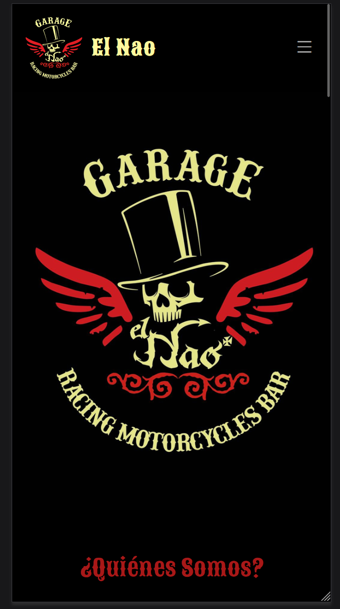
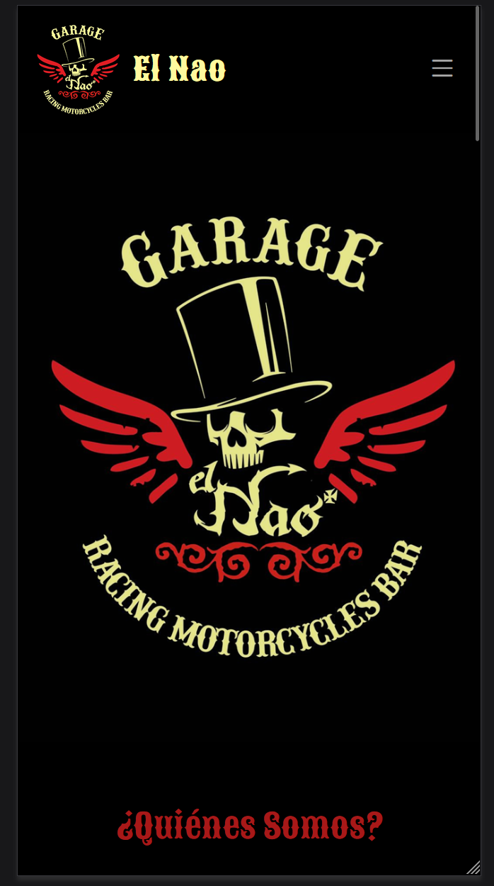

Informe de Desarrollo Web para la Cafetería El Nao
Web que voy a hacer. ¿Por qué?
La web que voy a hacer es para un bar-cafetería ubicado en Marín, Pontevedra, llamado El Nao. Esta web es necesaria porque actualmente el establecimiento no dispone de presencia online más allá de Facebook, y considero que tener una página web es fundamental para dar a conocer el negocio y facilitar el acceso a la carta y otra información relevante para los clientes.
Objetivos y público objetivo
El objetivo principal de la web será poner a disposición de los clientes la carta del establecimiento, así como proporcionar información general, como la ubicación, horarios, contacto, etc. La página estará orientada a los habitantes de Marín, y a turistas que visiten la localidad...
URLs de webs de la misma temática
A continuación se presentan tres webs de establecimientos en la zona de Pontevedra:
1. Opulpeiro
El diseño de la web permite que de un vistazo el usuario sepa dónde debe pinchar para acceder a la información más relevante: el menú y las reservas.
Cabe mencionar la buena adaptatividad para soportes móviles, el menú de la parte superior se convierte en un desplegable...


2. Gumer
Un ejemplo análogo al anterior, con la diferencia de que el acceso a la carta es inmediato, más conveniente al ser un restaurante.
En esta web el logo también se adapta en soporte móvil...


3. Ristorante Il Piccolo
El siguiente ejemplo no introduce ninguna novedad. Incluso podría ser reprochable cómo se muestra el logo...
El patrón es evidente, el logo en la parte superior izquierda, un menú desplegable con las secciones de la web...
Y una página principal con una imagen de algún plato atractivo que levante el apetito.
Criterios de comparación
Al comparar estas webs, he definido los siguientes criterios:
- Claridad en la información: Debe ser muy accesible, a primera vista se debe poder encontrar la carta, el apartado de contacto, horarios...
- Diseño visual: Debe ir acorde con la estética y filosofía del establecimiento.
- Accesibilidad: Debe ser adaptativa para facilitar la accesibilidad desde distintos dispositivos. Quizás se podría pensar en la opción de traducir la página al inglés con un botón, por la posibilidad de que al establecimiento lleguen turistas...
Secciones y estructura (relación jerárquica de las secciones)
Las webs comparten una estructura jerárquica clara y sencilla, descrita a continuación:
- Página Principal: Breve presentación con información sobre horarios e imágenes del establecimiento.
A partir de esta, se accede fácilmente a los siguientes apartados: - Carta: Menú completo, con descripciones de los productos y precios.
- Sobre nosotros: Información sobre el establecimiento, su historia y filosofía.
- Ubicación: iframe con la localización del establecimiento.
- Contacto: Formulario de contacto y número de teléfono.
- Redes Sociales: Accesibles a través del/los iconos de las mismas.

Paletas de Colores
El Nao es un bar que fundamenta toda su identidad visual en las motos y un estilo vintage muy característico.
A partir del logo del establecimiento se ha generado la siguiente paleta:
Trabajar con menos colores haría que la web se alejase de lo que quiere transmitir el establecimiento, pero por mostrar otra posibilidad, basándonos en el interior del establecimiento, podemos generar otra paleta:
Pese a presentar una mayor armonía cromática, no se ajusta a lo que transmite el local realmente y está lejos de "ir bien con el logo"
Finalmente, considerando los colores del logo, lo que el local quiere transmitir y su apariencia interior, la paleta escogida:
Web estática
En base a los criterios definidos en la sección Web que voy a hacer, he decidido hacer uso de la plantilla Amoeba. Esta plantilla, pese a no presentar la paleta escogida en Paletas de colores, se ajusta, a grandes rasgos, a las secciones y estructura que pretendo implementar en la web final.

En primer lugar, cambié la paleta de la página a la escogida y la fuente a la utilizada por el establecimiento en el logo (Sancreek). Añadí transparencias en la barra de navegación y cambié la imagen de la portada... Debido al formato vertical, en móviles, la imagen escogida no se ajusta a la estética de la página, por eso decidí poner el logo. Además, eliminé la transparencia de la barra de navegación y eliminé el atributo relative en escritorio para que no acompañe al scroll:
 

En la versión de escritorio, en el apartado de "¿Quienes somos?", añadí un carousel de fotos implementado con Bootstrap, que eliminé en la versión móvil por una cuestión de diseño.
De otra plantilla de la web bootstrapmade saqué el html asociado a una sección de carta genérica que utilizaré para mostrar tanto el menú como los desayunos del local, con pequeñas imágenes...
Mantuve el iframe de google maps de la plantilla y el formulario de contacto, que ahora mismo lleva a un html que da las gracias por contactar únicamente.
Con jQuery implementé una pequeña animacion en el logo del bar. Se hace más grande al pasar el ratón por encima y hace un efecto rebote al hacer click...
Finalemente en el footer, con pequeños cambios, repetí la información de dirección, contacto y horario (ya proporcionada en el apartado de "¿Quiénes Somos?")y añadí links a las redes sociales.
Accesibilidad
Tras realizar un análisis (mediante Lighthouse de chrome), se ha obtenido una puntuación de accesibilidad de 84 sobre 100. A pesar del buen resultado, se han detectado un aspecto fundamental a mejorar:
-
Elementos <iframe> sin título: Los iframes utilizados no disponen de un título descriptivo. Se debería añadir un atributo
title a los elementos <iframe> para que los usuarios de tecnologías asistivas entiendan su contenido.
Este problema es propio de la totalidad de la web, es cierto que no he hecho uso de los "Text alternatives" que requiere el WCAG 2.0 en su principio 1 y procederé a corregirlo.
Las herramientas propuestas TAW y WAVE no funcionan correctamente.
Usabilidad
Pese a que no hay mucho "dónde perderse" en la web de un restaurante, diseñé un test de card sorting con 3 categorías:
- "Quiénes somos?" con sus tarjetas asociadas:
- Teléfono
- Horario
- "Carta" con:
- Menú
- Desayunos
- "Dónde estamos?" con:
- Ubicación
Los resultados para 4 participantes no sorprendieron, en menos de 1 minuto de media ordenaron todas las tajetas y excepto un usuario, que consideró que el horario debería tener una sección a parte, todos coincidieron con mi categorización.
Podría crear otra sección para el horario pero tampoco mejoraría demasiado la accesibilidad y podría ser hasta poco estético. Teniendo en cuenta lo compacta que es la web de un establecimiento, no parece que sea muy necesaria otra categoría.
Entrega Final
Atendiendo a las correcciones propuestas en la entrega intermedia:
- Fue corregido el problema del uso de 3 colores, que hacía algo difícil la lectura.
- Se simplificó el logo del establecimiento.
- Se añadieron separadores horizontales entre secciones...
- Además de pequeñas correcciones tipográficas...
Haciendo uso de la entrega del formulario de login y la práctica de bases de datos, se implementó la comunicación del formulario con una base de datos a través del fichero en la ruta "forms/contact.php". Este redirige a una web agradeciendo el contacto si se comunica correctamente con la base de datos.
La base de datos está formada por una única tabla con 5 columnas, las cuales son visibles a través del inicio de sesión [usuario: admin ; contraseña: admin] en la interfaz de login creada (con pequeñas modificaciones visuales) en la ya mencioanda entrega.